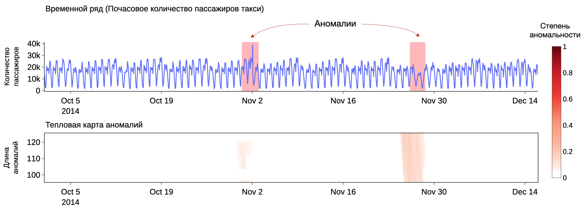

О тьюториале
Аннотация
Интеллектуальная обработка временных рядов требуется в широком спектре предметных областей: финансы, климатология, медицина, цифровую индустрия, Интернет вещей и др. Обнаружение аномалий – одна из наиболее актуальных задач интеллектуального анализа временных рядов, которая позволяет выявить интервалы, наиболее отличающиеся от остальных данных. В рамках тьюториала будут представлены параллельные алгоритмы обнаружения аномалий временного ряда для графических процессоров; участники будут искать аномалии временных рядов из реальных практических задач. Для участия не требуется быть профессиональным программистом: будут предоставлены наборы данных, заготовки программ и подсказки, чтобы свести написание кода к десятку строк.

Целевая аудитория и требования
- Студенты бакалавриата, магистратуры и аспиранты, исследователи и практики в области компьютерных наук и смежных дисциплин.
- Необходимо владение любым языком программирования высокого уровня (предпочтительно Python).
- Необходим ноутбук со стабильным подключением к интернету, действующий аккаунт Google и доступ к Google Colab.
Длительность и программа
- Длительность – 2 академических часа.
- Лекционный материал перемежается с выполнением практических заданий.
- Тьюториал покрывает следующие основные темы:
Место и время
- Дата: 6 апреля 2026.
- Время: 13:00–14:30.
- Место: Уфа, Межвузовский студенческий кампус Евразийского НОЦ, ул. Заки Валиди, д. 32/2, ауд. 335 (карта).
Литература
- Lin J. et al. Approximations to magic: Finding unusual medical time series. CBMS 2005, 329-334. DOI: 10.1109/CBMS.2005.34.
- Yankov D. et al. Disk aware discord discovery: Finding unusual time series in terabyte sized datasets. Knowl. Inf. Syst. 2008. 17(2), 241-262. DOI: 10.1007/s10115-008-0131-9.
- Nakamura T. et al. MERLIN++: Parameter-free discovery of time series anomalies. Data Min. Knowl. Discov. 2023. 37(2), 670-709. DOI: 10.1007/s10618-022-00876-7.
- Kraeva Ya., Zymbler M. A parallel discord discovery algorithm for a graphics processor. Pattern Recognition and Image Analysis. 2023. 33(2), 101-112. DOI: 10.1134/S1054661823020062.
- Zymbler M., Kraeva Ya. High-Performance time series anomaly discovery on graphics processors. Mathematics. 2023. 11(14), 3193. DOI: 10.3390/math11143193.